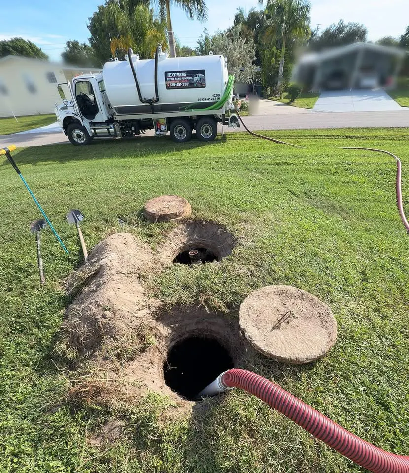
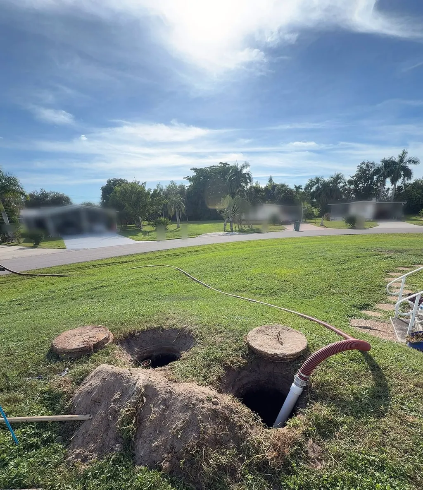

Express Septic Tank Pumping
Residential Septic Tank Pumping in Southwest Florida

Honest, reliable and fair — great customer service is our top priority.
Our residential septic tank pumping service is built for homeowners. We locate the tank lid, pump out the full tank, and let you know what we see so you can plan ahead.
Regular pumping protects your drain field, prevents backups inside the house and helps your system last longer. It's also a smart step before buying or selling a home, before a big family gathering, or after a heavy rainy season.
Tip: keep a record of every pumping date. It helps you stay on schedule and shows buyers the system has been maintained.
Residential septic pumping starting at $399.99
Your final quote depends on tank size, tank access, and whether the lid needs locating or digging. After-hours pumping is starting at $599.99. Call to confirm for your tank.
What happens during a visit

- We locate the tank. We find the tank and its lid or access port. If the lid is buried, we dig to reach it, and that work is quoted on the call.
- We pump it out. The truck pumps the liquid, sludge and scum out of the tank.
- We tell you what we saw. You'll hear about anything that looks like it needs attention.
How to prepare
- If you know where the lid is, mark it or tell us when you call.
- Make sure the truck can get close: clear the driveway and keep vehicles off the drain field.
- Keep pets inside and unlock any gates.
- Have your last pumping date handy if you know it.
What affects the price
- Tank size and how full it is
- Access: how far the truck has to reach and whether the lid is buried and needs locating or digging
- Location within our service area
- After-hours pumping: starting at $599.99
Residential septic pumping starting at $399.99
Your final quote depends on tank size, tank access, and whether the lid needs locating or digging. After-hours pumping is starting at $599.99. Call to confirm for your tank.
Call (239) 451-3261 to confirm pricing for your tank.
Residential Septic Service Near Me
Residential septic tank cleaning removes built-up sludge and scum so your home's system keeps working.
Tank Size FAQs
What size is my septic tank?
Many homes have tanks around 750 to 1,500 gallons; larger homes generally have larger tanks. Your permit records or our crew can help confirm the size.
Does tank size change how often I pump?
Yes. Smaller tanks and larger households need pumping more often. See how often to pump your septic tank.
Service Areas
- Estero
- Bonita Springs
- Naples
- North Naples
- Fort Myers
- Cape Coral
- Lehigh Acres
- San Carlos Park
- East Naples
- Golden Gate
- Marco Island
- Immokalee
- Ave Maria
- North Fort Myers
- Fort Myers Beach
- Three Oaks
- Gateway
- Alva
- Buckingham
- Sanibel
- Captiva
- Pine Island
- Port Charlotte
- Punta Gorda
- Everglades City
- Golden Gate Estates
- South Fort Myers
- Fort Myers Shores
- Tice
- Corkscrew
- LaBelle
- Charlotte Harbor
- Harbour Heights
Other Services
- Septic Tank Pumping
- Residential Septic Tank Pumping
- Commercial Septic Tank Pumping
- Septic Tank Riser Installation
- Septic Repair
- Drain Field Replacement
- Lift Station Pumping
- Grease Trap & Interceptor Pumping
- Septic Inspections
- Commercial Grease Trap Service
Documented jobs
Reviews
See what customers say on Google
Our reviews are on our Google Business Profile.
Talk to Express about your tank
Call day or night for a backup. For routine pumping, ask about same-day availability.